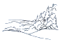
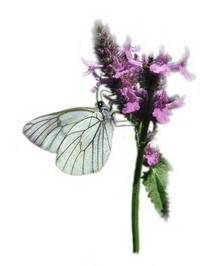
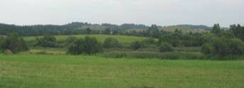
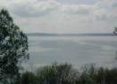
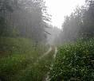
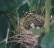
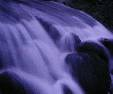

Природа Виштынецкой возвышенности
Виштынецкая возвышенность — удивительный край ледниковых озёр и холмов, край уединённых болот и дремучих лесов, сотканный тысячами трав и деревьев, полный запахов, звуков и красок, край, где чувствуешь себя свободным, соприкасаясь с миром дикой природы.

Роминтская пуща

Птицы Роминтской пущи
Реки Роминтской пущи

Государственный природный заказник «Виштынецкий»

Ключевая орнитологическая территория

Трансграничная ключевая водно-болотная территория

Памятники природы
